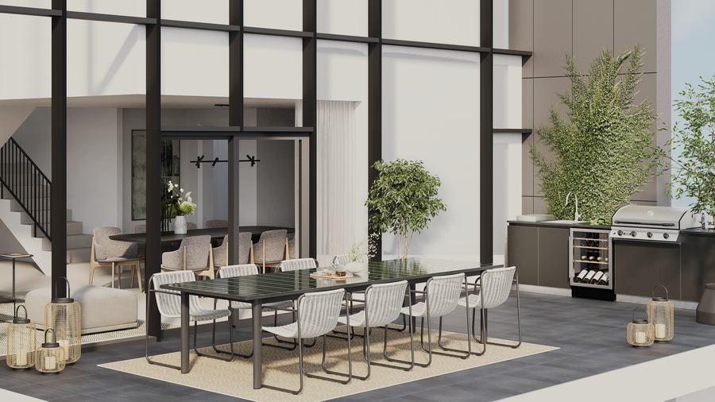
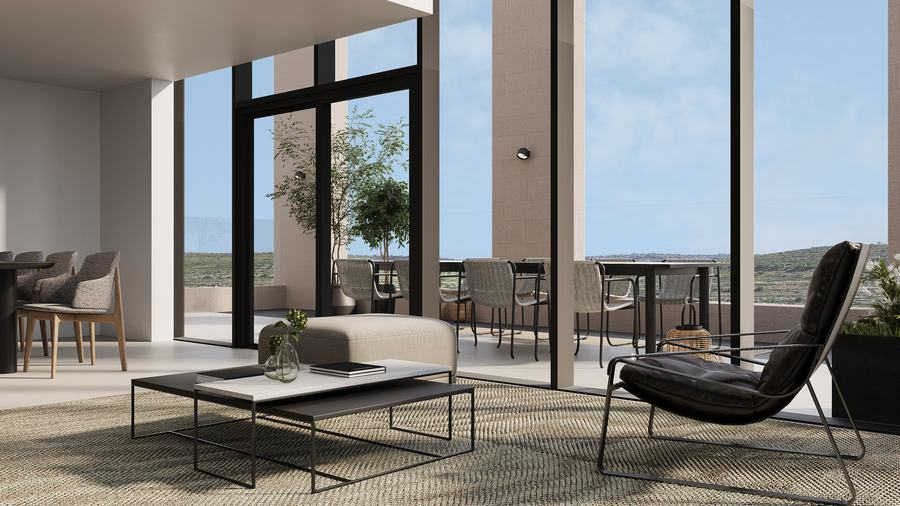

A new Torah-centered community rising in Givat Ze'ev, 19 minutes from the center of Yerushalayim
Leave your detailsGivat Hashalvah is a new, vibrant, Torah-centered community rising in Givat Ze'ev, beside the established Agan Ha'Ayalot neighborhood. It offers an English-friendly, frum environment with schools, shuls, mikvaos, daycares, parks and community spaces built right into the plan. Families are joining from across the frum Anglo world, all with the same goal: to live Torah-centered lives in a quality neighborhood in Eretz Yisroel.
Solel Boneh is Israel's most respected construction firm, with a track record tied to landmark projects and national infrastructure. Givat Hashalvah is already under active construction, with infrastructure and permits in place.


"When I first heard of Givat Hashalvah, it didn't take long for me to see the value behind it. It's close to Yerushalayim and geared towards family life. The community is filled with big open spaces, and I'll feel comfortable with my kids running around outside. Givat Hashalvah is simply the ideal place to live in Eretz Yisroel."
"It's a community geared toward our lifestyle, with the kind of clarity and belonging we've been looking for."
"From the first conversation, the Givat Hashalvah team made the process feel clear, organized and genuinely supportive. Buying real estate in Eretz Yisroel can come with its challenges, but here it felt smooth and reassuring."
"I wanted a Chutznik-style shul, English shiurim, warmth and good energy, not fancy cars."
"We're still attached to Yerushalayim by the hip."
For families who want to live fully Torah-aligned lives without sacrificing quality. Our residents come from across the Anglo, Yeshivish and Chassidish spectrum: frum, grounded, family-oriented and community-minded. You'll find people who share your values and your language.
We understand the skepticism. The Israeli market has taught buyers to be cautious. That is exactly why Givat Hashalvah is backed by Amim Group and built by Solel Boneh, Israel's most respected construction firm. It is already under active construction, with infrastructure and permits in place.
Yes, and that is central to the vision. Ten shuls, seven indoor community centers, schools, early childhood programs and playgrounds are all part of Phase 1. This is not just housing. It is a kehillah being built with the infrastructure of daily life from the outset.
Not at all. Givat Hashalvah is right off Highway 443, 10 minutes from Ramot and 19 minutes from downtown Yerushalayim. Many residents still work, learn and send children to schools in the city.
Because Givat Hashalvah is close to Yerushalayim rather than in its center, it offers larger homes, a higher quality standard and a fuller range of amenities, while still keeping the city within easy reach.